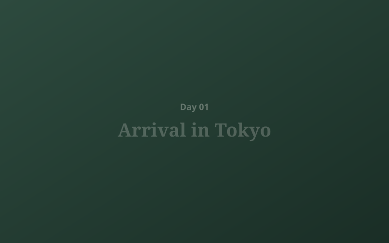

Arrival in Tokyo: Shinjuku and First Impressions

Your journey begins the moment you land. After a private transfer to your Shinjuku hotel, the afternoon is yours — step into the controlled chaos of Kabukicho, find a quiet ramen bar in Golden Gai, or simply let the city find you. Tonight: dinner at a standing sushi counter, the first lesson in how Japan operates at a different frequency.